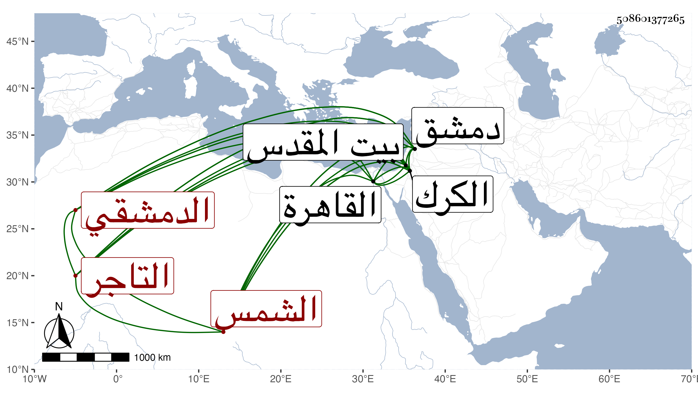

0902Sakhawi.DawLamic.ITO20230111-ara1.EIS1600.508601377265
Biography ID: 508601377265
6
محمد بن محمد بن محمد بن محمود بن السلعوس بفتح السين وإسكان اللام وضم العين وآخره مهملات الشمس التاجر الدمشقي . من بيت رياسة بدمشق سمع من أبي محمد بن أبي التائب ، وحدث سمع منه شيخنا وغيره وقال في معجمه كان خيرا . مات بدمشق في سنة خمس وتبعه المقريزي في عقوده . محمد بن محمد بن محمد بن مسلم بن علي بن أبي الجود ناصر الدين الكركي المقدسي والد التاج محمد الماضي ويعرف بابن الغرابيلي . ولد سنة ثلاث وخمسين وسبعمائة بالكرك وكان أبوه من أعيانها فنشأ في نعمة واشتغل بالعلم والآداب وصاهر العماد الكركي القاضي على ابنته وسكن القاهرة سنين ولي نيابة قلعة الكرك ولما عزل سكن القدس إلى أن مات في شعبان سنة ست عشرة ، وكان فاضلا ذكيا عارفا مستحضرا للوقائع يرجع إلى دين . ذكره شيخنا في إنبائه . ويقال أنه مات في رجب وهو المكتوب على عمود قبره ، وطول المقريزي ترجمته بالحكايات رحمه الله .
